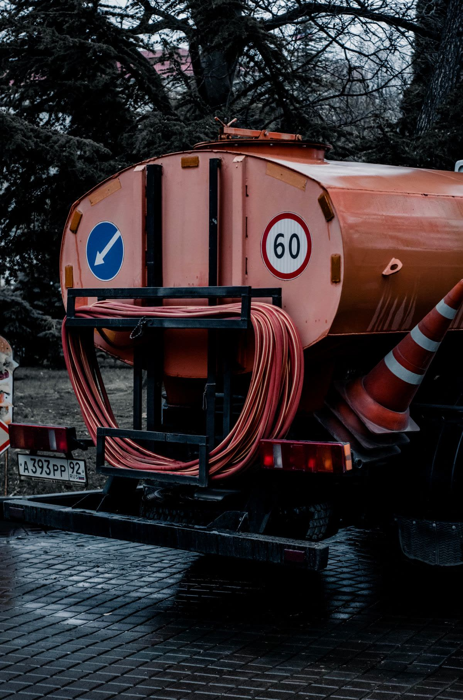
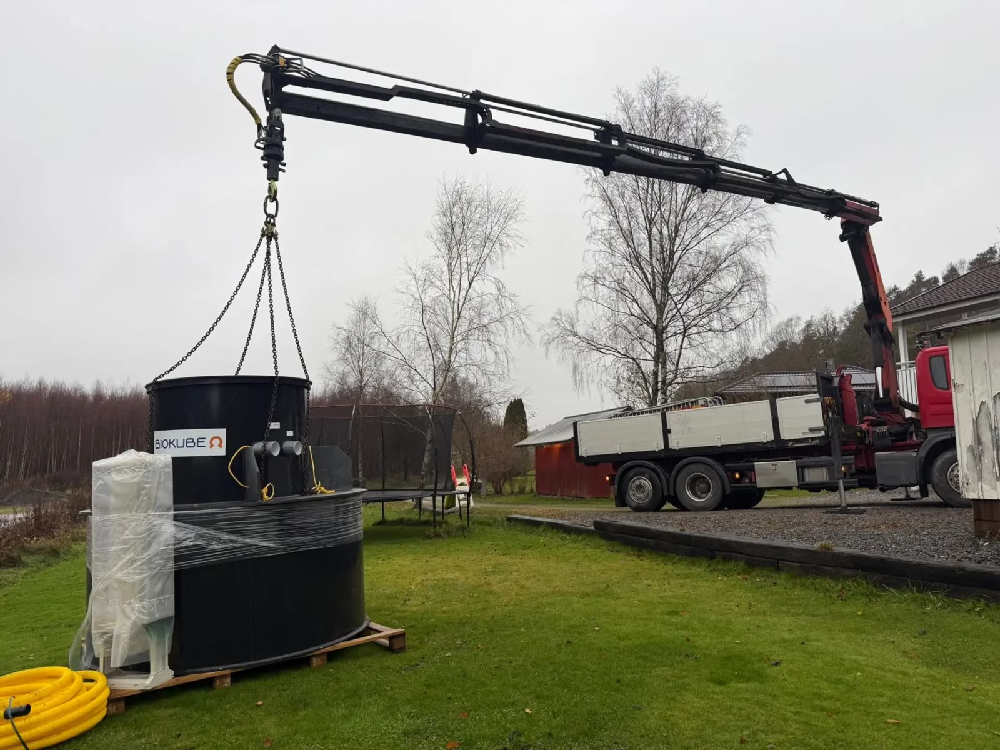
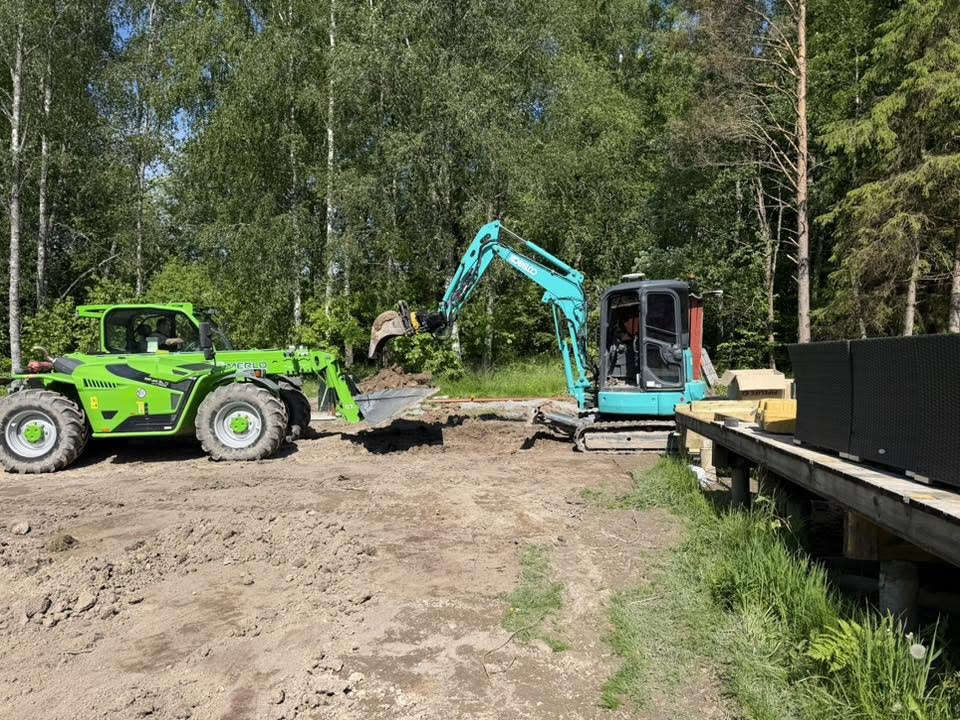

Tjänster
Från inspektion och underhåll till installation och renovering – vi hjälper dig att hitta rätt lösning för ditt avloppssystem.

Med kamerainspektion av avloppsledningar går det att identifiera stopp, skador och andra problem i rörsystemet.
Läs mer →
Spolning av avloppsledningar för att avlägsna avlagringar, smuts och hinder som påverkar avloppssystemets funktion.
Läs mer →
Vi utför renovering av befintliga avloppssystem.
Läs mer →
När befintliga avloppsledningar inte längre fungerar som de ska kan ett byte vara nödvändigt.
Läs mer →
Vi arbetar med anläggning och installation av minireningsverk för enskilda avloppslösningar. Företaget finns listat som återförsäljare hos BioKube.
Läs mer →
Regelbunden service och underhåll bidrar till att avloppssystem fungerar som de ska och kan minska risken för kostsamma problem.
Läs mer →
Vi erbjuder tjänster inom vatten- och avloppsteknik, inklusive installation, underhåll och åtgärder på befintliga avloppssystem.
Läs mer →Beskriv ditt ärende så återkommer vi.